This is a guide to walk you through how to add or update CodeLabs contents onto CodeLabs page maintained by SE Core Specialist team.
In this section, you'll create a CodeLab Source File in Google Doc format. You can skip this section if you are going to update the contents and you have an access to CodeLab Source File already.
If you don't have MuleSoft Codelabs Slack app, add it on your slack. You can add Slack app by hitting plus button next to Apps on your slack window.
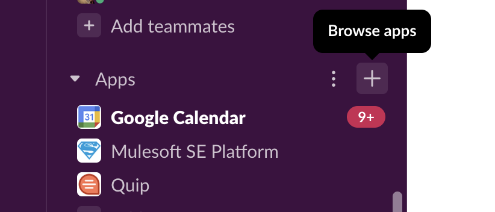
Search "MuleSoft Codelabs" and choose it to add the app.
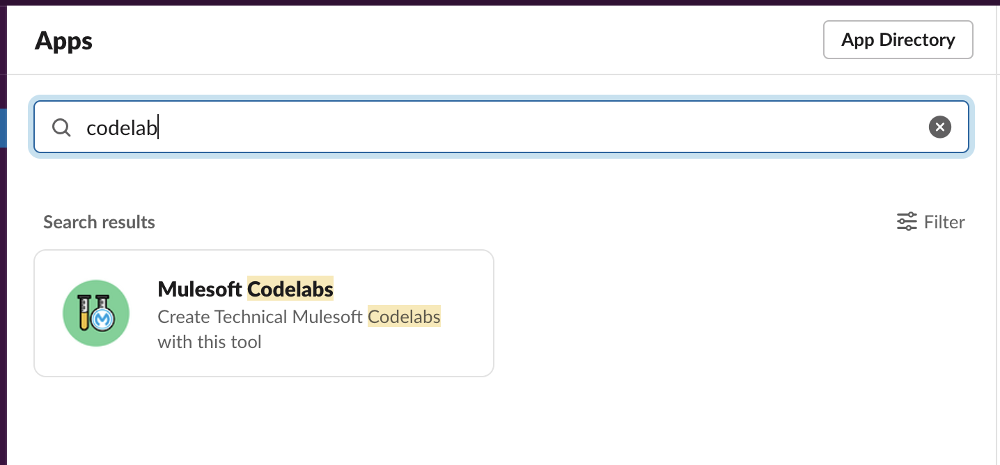
You will see "Mulesoft Codelabs" in your Apps directory if it is successfully installed.
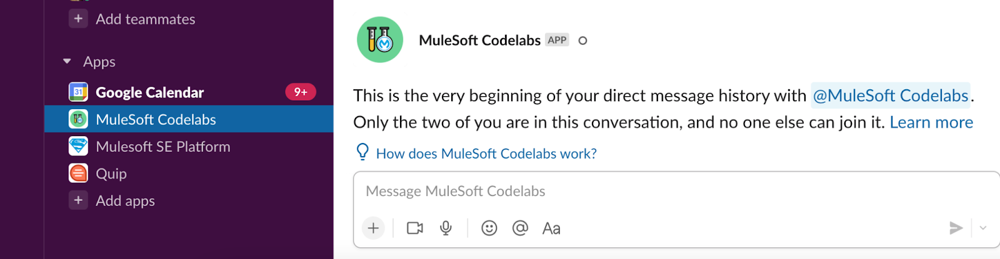
Hit /clb create at MuleSoft Codelabs message window.
Then a form will be popped up. You fill in all fields and hit submit button.
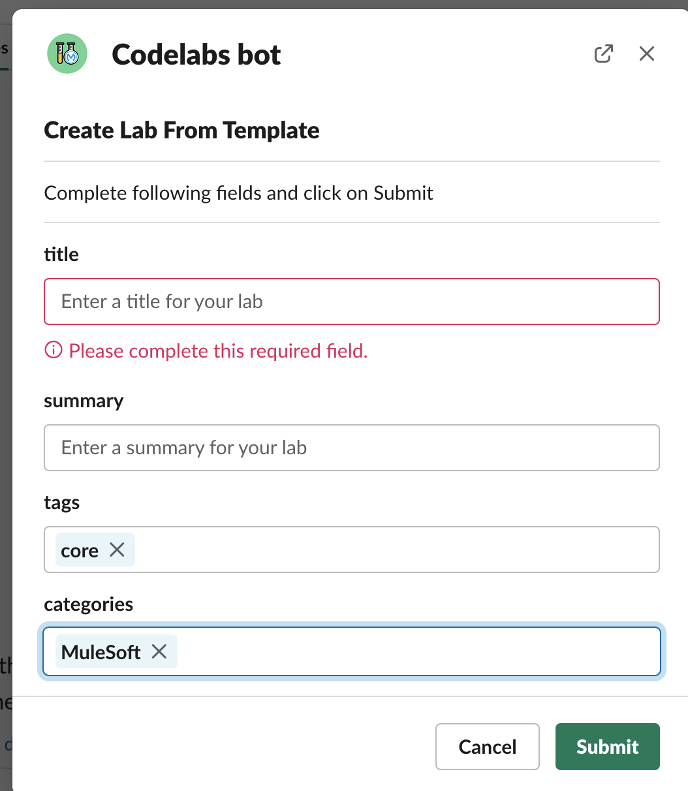
If everything is fine, you get a notification with the link to the generated Codelab template Google doc file. If you miss the message, you can list your files by /clb list and hit Edit.
Sample image:
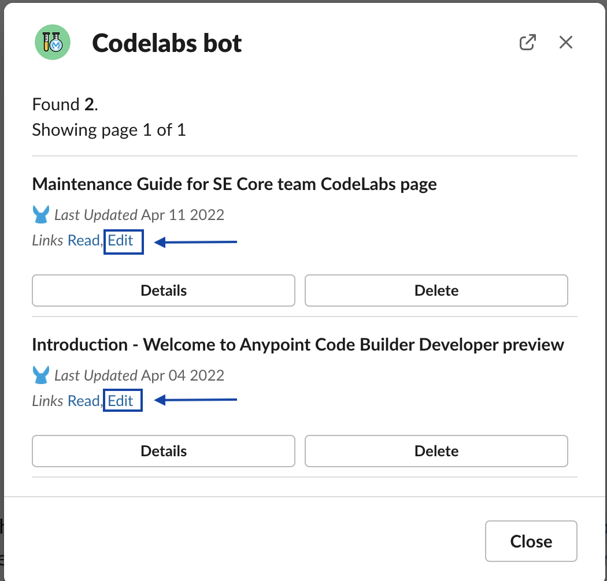
Edit CodeLab Source file you generated at previous step. Its format guide is available in the file you generated. On top of this, a template with a full set of format example is given by Google here:
Image:
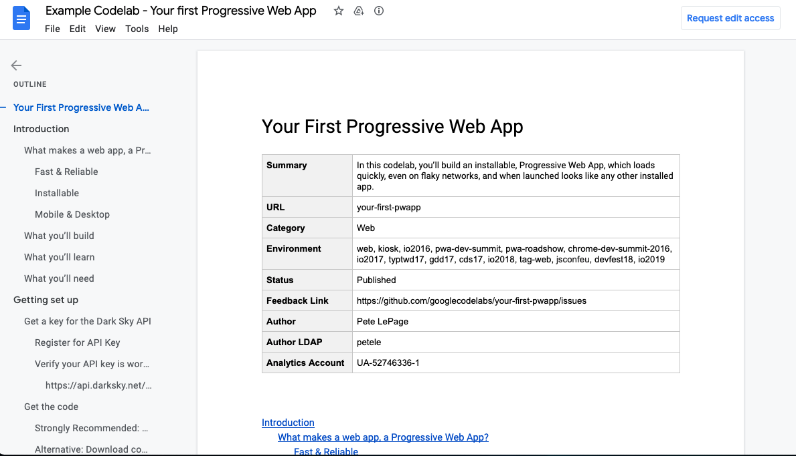
When writing up your code lab, you'll likely want to preview it before you deploy to the test environment.
If you haven't installed it, you can install it from here.
If you haven't installed it, you can install it from here.
Click the shortcut to invoke the preview while Google Doc is opening.
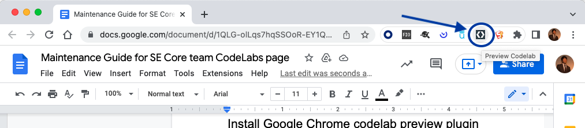
Image:
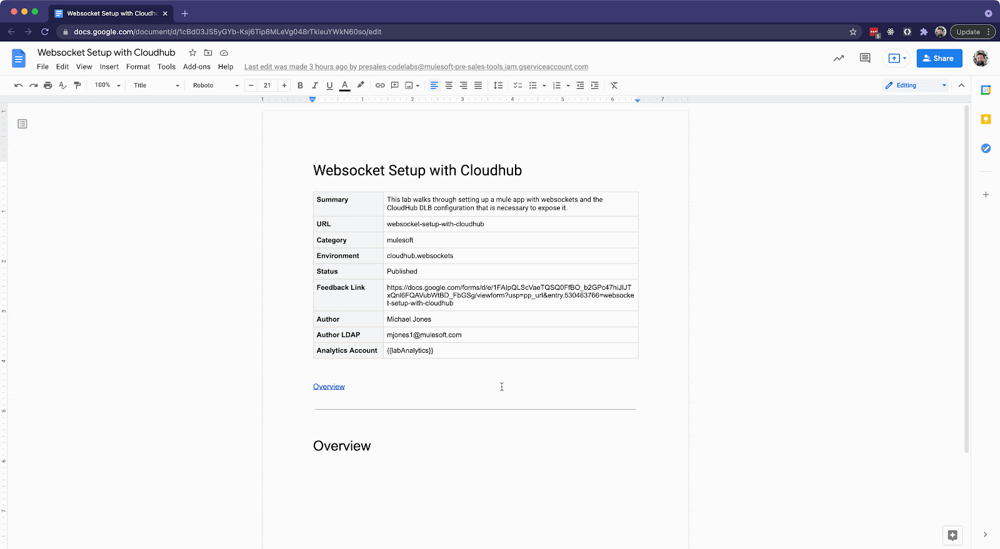
Our CodeLab site resources are managed on following GitHub repositories:
On this section, we will transform the google doc file you maintained in the previous section into HTML sources. Then update the GitHub source repository.
$ git clone https://github.com/mulesoft-consulting/se-core-codelabs-sources.git# Open codelabs folder and build Codelabs page from Google Doc ID
cd codelabs
claat export <Google Doc ID>Google Doc ID can be grabbed from URL:
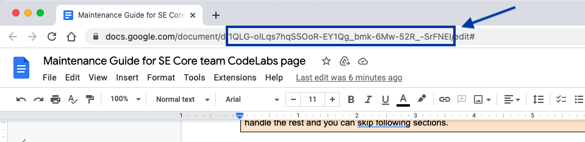
If it is successfully generated, OK is returned.
Sample output:
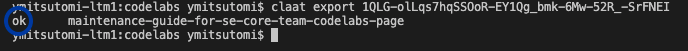
Run gulp serve , then site instance is invoked at http://localhost:8000
$ gulp serve
[15:47:00] Working directory changed to ~/codelab/se-core-team-codelabs-sources/se-core-codelabs-sources
[15:47:02] Using gulpfile ~/codelab/se-core-team-codelabs-sources/se-core-codelabs-sources/gulpfile.js
[15:47:02] Starting 'serve'...
[15:47:02] Starting 'build'...
[15:47:02] Starting 'clean'...
[15:47:02] Starting 'clean:build'...
[15:47:02] Starting 'clean:dist'...
[15:47:02] Finished 'clean:build' after 2.97 ms
[15:47:02] Finished 'clean:dist' after 62 ms
[15:47:02] Finished 'clean' after 63 ms
[15:47:02] Starting 'build:codelabs'...
[15:47:02] Finished 'build:codelabs' after 1.28 ms
[15:47:02] Starting 'build:css'...
[15:47:02] Finished 'build:css' after 21 ms
[15:47:02] Starting 'build:scss'...
[15:47:02] Finished 'build:scss' after 93 ms
[15:47:02] Starting 'build:html'...
[15:47:03] Finished 'build:html' after 303 ms
[15:47:03] Starting 'build:images'...
[15:47:03] Finished 'build:images' after 82 ms
[15:47:03] Starting 'build:js'...
[15:47:03] Finished 'build:js' after 384 ms
[15:47:03] Starting 'build:elements_js'...
[15:47:03] Finished 'build:elements_js' after 13 ms
[15:47:03] Starting 'build:vulcanize'...
[15:47:07] Finished 'build:vulcanize' after 3.41 s
[15:47:07] Finished 'build' after 4.37 s
[15:47:07] Starting 'watch'...
[15:47:07] Starting '<anonymous>'...
[15:47:07] Starting 'watch:css'...
[15:47:07] Starting 'watch:html'...
[15:47:07] Starting 'watch:images'...
[15:47:07] Starting 'watch:js'...
[15:47:07] Webserver started at http://localhost:8000
[15:47:07] Finished '<anonymous>' after 42 msSample image:
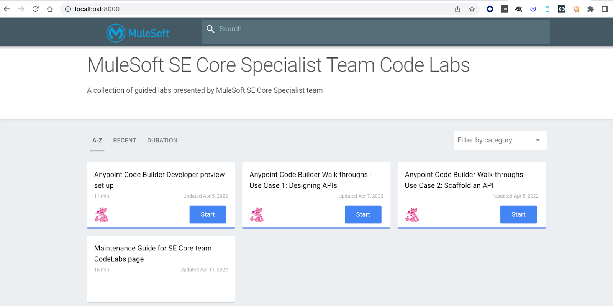
If everything work as expected, hit ctrl + C to stop the instance.
When you want to put inline code, use the Courier New font like this!
If you want to include a code block, which has a copy button, create a 1x1 table and use the font Courier new:
//this is a code block
%dw 2.0
output application/json
---
"Hello world!"If you want to add a warning block, add a 1x1 table with this background color (3 from the left, and 3 down in the color picker):
If you want to do a green box, same thing but with this background color:
If you want to include a button instead of a simple link, create a link and set the highlight with this green: